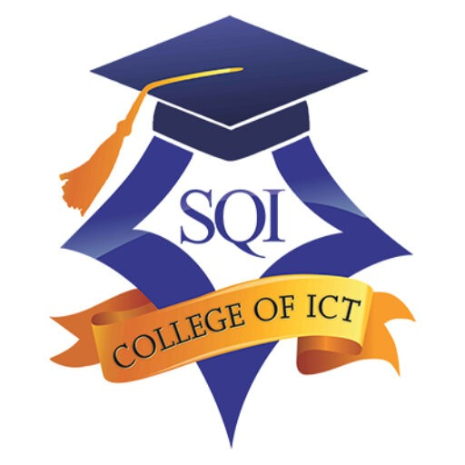

Study at SQI College of ICT
Checkout our available courses for National Diploma programme.
Download our admission brochure to learn more about tuition fee breakdown and course details.
With the accredited MONOTECHNIC status, SQI now offers a range of
industry-relevant ICT based
National Diploma programs with the
same practical approach.
See our available National Diploma (ND) Courses
The Computer Science program
provides in-depth knowledge of
programming, software
development,
data structures, cybersecurity, and
artificial intelligence, equipping
students with the right skillset.
Our accountancy program is with ICT,
this integrated approach equips
students with a strong
foundation in
accounting and financial reporting,
while leveraging modern digital tools
and technologies.
Our Business Management and
Administration program blends ICT
with core business
principles,
equipping students with both business
and tech.
At SQI College of ICT, we are dedicated to
nurturing the next generation of tech leaders. Our
National Diploma (ND) programs are designed
to provide students with the practical skills and
knowledge needed to excel in the rapidly
evolving tech industry.
With a focus on 80% hands-on training, our
students are not only prepared for the job
market
but also equipped to secure remote jobs
even before graduation.
SQI integrates quality, convenience, and modern technology into
education, bridging the gap
between theory and real-world
application.
The National Diploma (ND) offered at SQI College of ICT is a 2 year
approved academic
program of the National Board for Technical
Education (NBTE).
78.5% of our students found secure employment within three
months of graduation. Students
leave from learning to getting job
roles.
Here are the processes to gain admission to the college’s National Diploma program?
STEP 1: Five (5) Credit Pass at your O’Level (WAEC/NECO/GCE/NABTEB) result is required in relevant subjects not more than 2
sittings. English
Language and Mathematics are
COMPULSORY.
STEP 2: Apply through JAMB and choose “SQI College of ICT” as your first choice.
STEP 3: A minimum JAMB score of 100 is required in your UTME.
STEP 4: Obtain the Application/Post UTME form at the college or online: Click here
STEP 5: Attend a scheduled screening (exam and interview) at the college’s main campus.
STEP 6: Check your email regularly for admission updates.
Whether you are a student of Arts, Commercial, or Science, you are welcome to apply. Our programs are open to
all disciplines!
Additionally, applicants with Awaiting Results can also apply. Just ensure all required documents are
completed before the end of your
program.